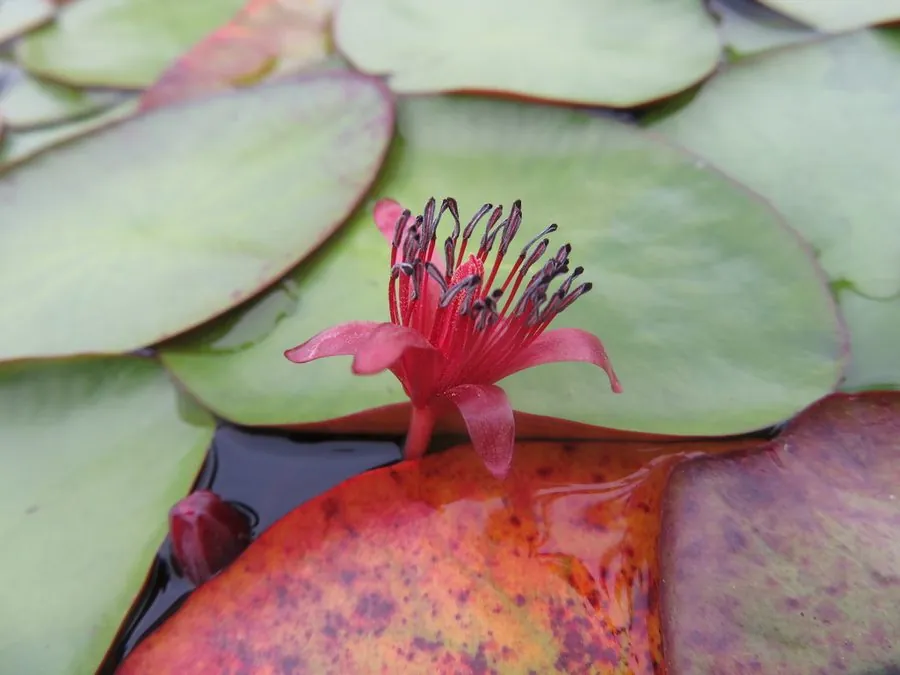

水生植物 · 植物界
莼菜 Brasenia schreberi

莼菜科莼菜属多年生水生草本，叶片椭圆形浮水，嫩茎叶覆透明胶质，可做西湖莼菜羹，是中国江南传统水生蔬菜。
- 分类
- 门被子植物门纲木兰纲目睡莲目科莼菜科属莼菜属
- 栖息环境
- 池塘、湖泊的浅水区，喜清澈静水、阳光充足
- 地理分布
- 亚洲东部、北美及澳大利亚，中国浙江、江苏、湖北等地栽培
- 保护级别
- 暂无评估；中国国家二级保护野生植物
物种志
莼菜为莼菜科莼菜属的多年生水生草本，根状茎横生于水底泥中，茎细长。叶片浮于水面，椭圆形，长 5–12 厘米，基部盾形，全缘，表面深绿色，背面带紫色。嫩茎叶表面覆盖一层透明胶质，摸起来滑腻。花小，紫红色，单生于叶腋，花期 6–8 月；果实为坚果。
莼菜分布于亚洲东部、北美和澳大利亚的池塘湖泊，中国浙江、江苏、湖北等地栽培较多，喜温暖、阳光充足和清澈的静水，适宜水深 30–60 厘米。它的嫩茎叶覆有胶质，口感滑嫩，是江南名菜“西湖莼菜羹”的原料，自古与鲈鱼并称“莼鲈之思”。栽培以根状茎扦插和分株为主，需保持水质清洁；野生种群因湿地开发和污染而减少，应加以保护。
形态与习性
- 株高茎细长，叶片浮于水面
- 叶片椭圆形，长 5–12 厘米，盾形基部
- 花期6–8 月，花小、紫红色
- 水深适宜水深 30–60 厘米
- 水质要求清澈、流动缓慢的洁净水体
- 土壤富含腐殖质的塘泥
- 繁殖根状茎扦插、分株
- 主要用途嫩茎叶食用，制作莼菜羹
趣味知识
- 莼菜嫩茎叶表面的透明胶质让它口感滑嫩，是西湖莼菜羹的原料。
- “莼鲈之思”典故中的莼就是莼菜，代表思乡之情。
- 莼菜对水质要求高，水体污染会导致种群衰退。